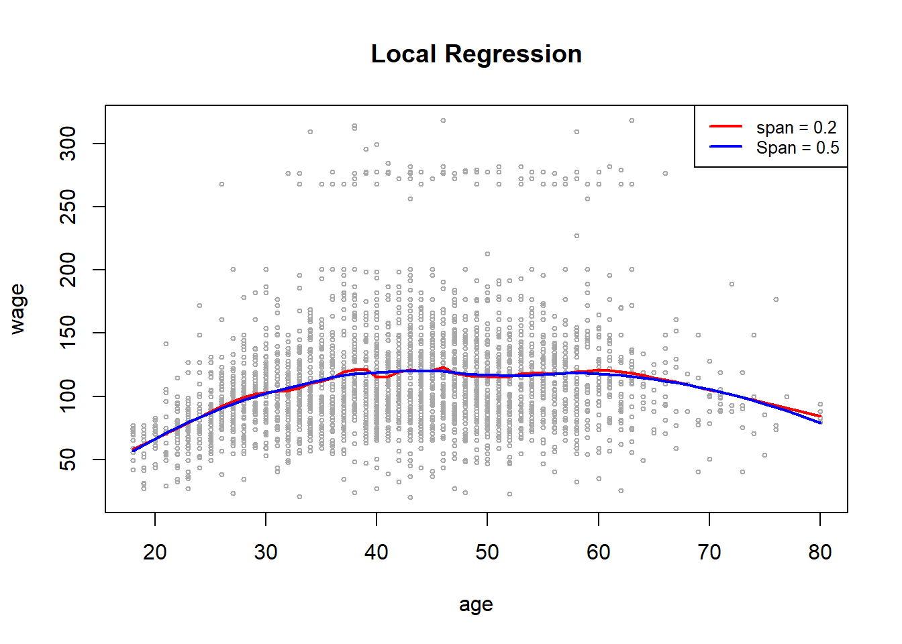

Chapter 5 Local Regression
This method improve bias from Kernel Smoothing at the boundaries by fitting straight lines instead of constants.
Also known as the locally weighted linear regression
It seeks to
\[ \min_{\alpha(x_0), \beta(x_0)} \sum_{1}^n K_\lambda (x_0, x_i)[y_i - \alpha (x_0) - \beta(x_0)x_i]^2 \]
and gives the estimate \(\hat{f}(x_0) =\hat{\alpha}(x_0)+ \hat{\beta}(x_0)x_0\)
To fit this, we let \(b(x)^T = (1,x)\) then define the \(n \times 2\) matrix \(\mathbf{B}\) to have i-th row given by \(b(x_i)^T\)
Then, let \(\mathbf{W}(x_0)\) be the \(n \times n\) diagonal matrix with the i-th diagonal given by \(K_\lambda(x_0, x_i)\). Then
\[ \hat{f}(x_0)=b(x_0)^T (\mathbf{B}^T \mathbf{W}(x_0)\mathbf{B})^{-1}\mathbf{B}^T \mathbf{W}(x_0)\mathbf{y} = \sum_{i=1}^n l_i(x_0)y_i \]
Thus, the fitted solution is linear in the \(y_i\) with the weights in the linear combination given by \(l_i(x_0)\), which are a combination of the kernel weights and least squares equations, which is called equivalent kernel
An advantage of this method is that it corrects the boundary bias issues to first order (i.e., the bias is only a function of the second derivatives of \(f(x_0)\) and so is small on average).
Thus, there is a small price we pay in that this fit tends to be a little bit biased in regions of curvature in the true function.
We can improve this bias by using locally polynomial regression (e.g., locally quadratic regression):
\[ \min_{\alpha(x_0), \beta_j(x_0),j = 1, \dots, d}\sum_{i=1}^n K_\lambda(x_0,x_i)[y_i - \alpha(x_0)- \sum_{j=1}^d \beta_j (x_0)x_i^j]^2 \]
which gives the solution \(\hat{f}(x_0) = \hat{\alpha}(x_0)+ \sum_{j=1}^d \hat{\beta}_j(x_0)x_0^j\)
The reduction in bias under locally quadratic fit offset by higher variance
Notes:
Local linear fits are much better at the boundaries than higher order polynomials in reducing bias, without leading to excessive variance increase.
Local quadratic fits do not help bias much at the boundaries, but increase the variance a lot
Local quadratic fits are usually used in reducing bias from curvature in the interior of the domain
Local polynomials of odd degree dominate those of even degree (based on asymptotic analysis because asymptotically the MSE is dominated by boundary effects).
5.1 Higher Dimensions
To generalize Kernel Smoothing and Local Regression with \(p\)-dimensional kernel, we consider local hyperplanes
Example:
If \(d= 1\) (polynomial degree) and \(p=2\), we have \(b^T(X) = (1,X_1,X_2)\)
If \(d =2\) and \(p=2\) we have \(b^T(X) = (1, X_1, X_2, X_1^2, X_2^2, X_1 X_2)\)
then, we solve
\[ \min_{\beta(x_0)} \sum_{i=1}^n K_\lambda(x_0,x_i)[y_i -b(x_i)^T \beta(x_0)]^2 \]
to fit \(\hat{f}(x_0) = b(x_0)^T \hat{\beta}(x_0)\)
Then, the kernels of the general form would be
\[ K_\lambda(x_0, x) = D(\frac{||x-x_0||}{\lambda}) \]
where \(||.||\) is the Euclidean norm.
Note: because the Euclidean norm is sensitive to the scale fo the variables, we have to standardize the predictors first.
The boundary bias issues are exponentiated under higher dimensions because of the Curse of dimensionality (larger fraction of the data locations are on or near the boundary)
Similar to the one-dimensional case, the local polynomial regression accounts for this boundary bias issue to first order. However, the problem is to balance localness (low bias) and low variance as the dimension increases without the sample size increasing exponentially in \(p\)
Hence, we do not see and should not use smoothing or local polynomial regression in dimensions beyond three.
Adding structural assumption to the modeling framework can help in cases where the dimension to sample size ratio high.
An example under kernels could be
\[ K_{\lambda, \mathbf{A}(x_0, x)}= D(\frac{(x-x_0)^T \mathbf{A}(x-x_0)}{\lambda}) \]
where \(\mathbf{A}\) is a \(p \times p\) positive semi-definite matrix, where it can give different weights to the elements of \(x-x_0\) and/or recombine the elements fo this vector in various ways to shrink some dimensions (“compress”) the points into a smaller region of space
Another way would be do add structure through varying coefficient models
Assume \(p\) inputs and a regression on the first \(q\) variables where the parameters depend on the remaining inputs \(Z= (X_{q+1}, X_{q+2}, \dots, X_p)\)
\[ f(x) = \alpha (Z) + \beta_1 (Z) X_1 + \dots + \beta_q (Z) X_q \]
where the coefficients are functions of \(Z\)
Under Kernel weighted local regressions, then
\[ \min_{\alpha (z_0), \beta(z_0)} \sum_{i=1}^n K_\lambda (z_0,z_i)[y_i - \alpha(z_0)-x_{1i} \beta_1(z_0)- \dots - x_{qi} \beta_q (z_0)]^2 \]
5.2 Application
Alternative package locfit
library(ISLR2)
attach(Wage)
library (splines)
# we want to predict for a grid of values for age
agelims <- range (age)
age.grid <- seq (from = agelims[1], to = agelims [2])
plot(age,
wage,
xlim = agelims,
cex = .5,
col = "darkgrey")
title("Local Regression")
# each neighborhood consists of (spans) percentage of the observations
fit <- loess(wage ~ age, span = .2, data = Wage) # using spans of 0.2 (i.e., each neighborhood consists of 20% of the observaitons)
fit2 <- loess(wage ~ age, span = .5, data = Wage) # using spans of 0.5
# with larger span, we have smoother fit
lines(age.grid,
predict(fit, data.frame(age = age.grid)),
col = "red",
lwd = 2)
lines(age.grid,
predict(fit2, data.frame(age = age.grid)),
col = "blue",
lwd = 2)
legend(
"topright",
legend = c("span = 0.2", "Span = 0.5"),
col = c("red", "blue"),
lty = 1,
lwd = 2 ,
cex = 0.8
)